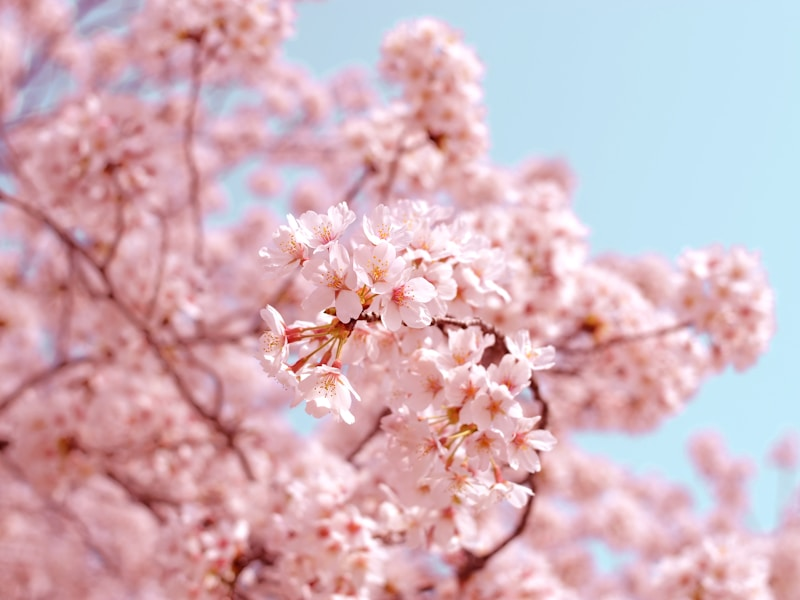
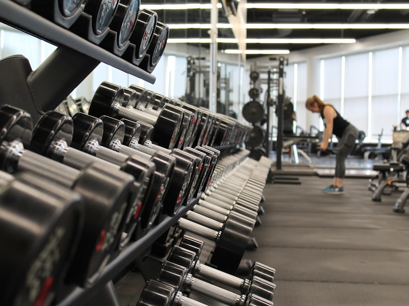
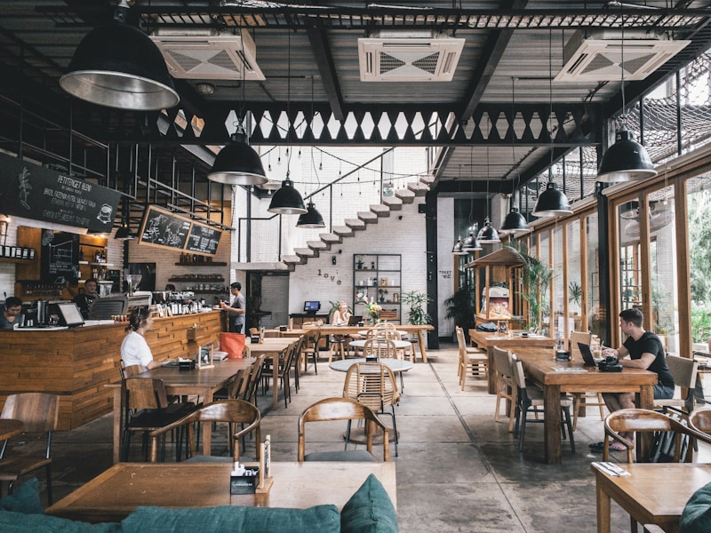
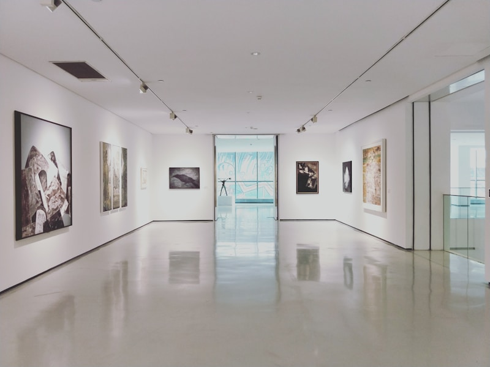

📚 图书馆
知识的海洋，静谧的学习圣地。这里藏书丰富，环境优雅，是自习和阅读的最佳选择。阳光透过落地窗洒进来，营造出温馨的学习氛围。
探索校园最美角落，记录青春美好时光
知识的海洋，静谧的学习圣地。这里藏书丰富，环境优雅，是自习和阅读的最佳选择。阳光透过落地窗洒进来，营造出温馨的学习氛围。

春日必打卡景点！每年四月，粉色樱花盛开，整条道路宛如梦幻仙境。微风拂过，花瓣飘落，美不胜收。
校园中心的静谧之地，湖水清澈，荷花盛开。古色古香的亭子倒映在水中，是晨读和放松的好去处。

现代化的体育设施，包含篮球场、羽毛球场、健身房等。在这里挥洒汗水，展现青春活力，是运动爱好者的天堂。
知识传递的殿堂，宽敞明亮的教室，先进的教学设备。在这里聆听名师授课，开启知识探索之旅。

校园美食聚集地，各地风味应有尽有。经济实惠，品种丰富，是同学们聚餐聊天的好地方。
绿草如茵的足球场，红色的塑胶跑道。清晨慢跑，傍晚散步，感受青春的气息与活力。

校园文化艺术的殿堂，经常举办各类展览和演出。充满艺术气息的空间，激发无限创意灵感。